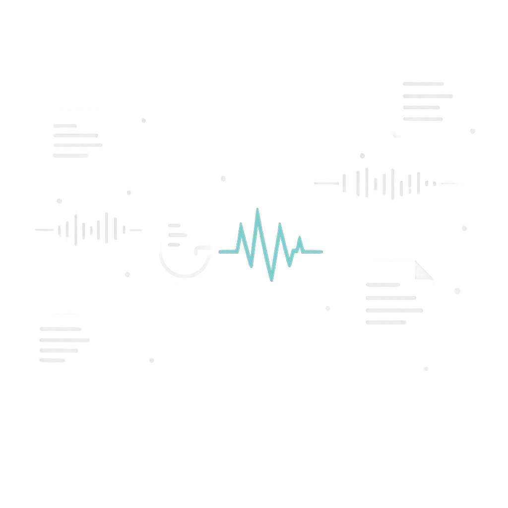

Workspace / Dictate
Dictation Desk
Speak naturally. Transcribed text auto-pastes directly into your active window.
Start recording
Recent History
Transcriptions

Your recent dictations will appear here.
Press F9 anywhere on your computer to start dictating.Workspace / Profiles
Post-Processing Profiles
Custom prompt rules and dedicated hotkeys to transform spoken voice into final text.
Active Profiles
Each profile can have a system instruction and a dedicated global shortcut key.
Workspace / Settings
Settings & Engine
Configure speech recognition providers, API keys, and audio devices.
AI Providers & Models
Configure speech and post-processing independently. Credentials are securely stored locally.
Transcription
LLM refinement
openai/gpt-4o-mini.Shortcuts & Input Device
Trigger voice dictation without interrupting your workflow.
Workspace / Diagnostics
Diagnostics & Pre-flight
Verify microphone hardware, API connectivity, and OS permissions.
System Health Check
A quick pre-flight test of all required dictation components.
Diagnostic results will appear here.